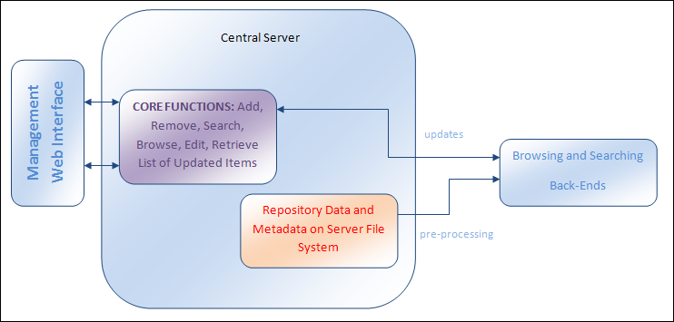

CALJAX components
Management
Management of the Central Repository
The management system of CALJAX implements several common repository management tasks such as adding items to the repository, browsing and searching through the repository as well as removing and editing items already in the repository. It also supports various standards of metadata and provides an extension system for supporting new metadata formats.
The management system features a Web interface and communicates with the offline collections through a standard HTTP 1.1 protocol, using AJAX technologies.
Aims
The management system is designed to be able to:
- support common repository management functions
- support various metadata standards and allow the support of new formats of metadata through an extension system
- provide lists of updated items to the offline copies of the collections
- provide a Web interface with good usability
- support all major Web browsers
- scale to large collections
Design
There were several design challenges in designing the CALJAX management system. This included allowing the support of various types of metadata. This was achieved through the use of XML Schema-based editors that use XML Schema definitions of metadata standards to produce generalised editors for the metadata. Also, an extension system was designed so that plug-ins could be written for providing customs editors for the different metadata types.
Another challenge included providing key functions to both a Web interface and the offline copies of the system. This was achieved through the use of XSLT and XML. The central server functions return XML formatted lists which can be directly processed by AJAX technologies on the offline copies but can also be rendered in Web browsers as part of the Web interface through XSLT transformations.
Management System Overview
The management system consists of:
- a set of core functions that can be called through an HTTP 1.1 protocol
- a Web interface that makes use of these core functions
- configuration files for the different metadata types supported by the system
- repository data and metadata in defined structure on file system

Conclusions
The management system was evaluated and its effectiveness was analysed. The following conclusions were made:
- The system implemented the common management functions expected of a repository management system
- The system scaled up to a collection of over 15,000 items
- The Web interface for management had good usability
- The system had a reasonable response time for search queries
- The Web interface was compatible with all major browsers
Future Work
More work could be carried out in the following areas to improve the system:
- Further scalability testing
- More sophisticated searching and browsing functions
- Support for large lists of updates
- Full use of all aspects of the XML Schema specification
For more in depth information, refer to the full report.